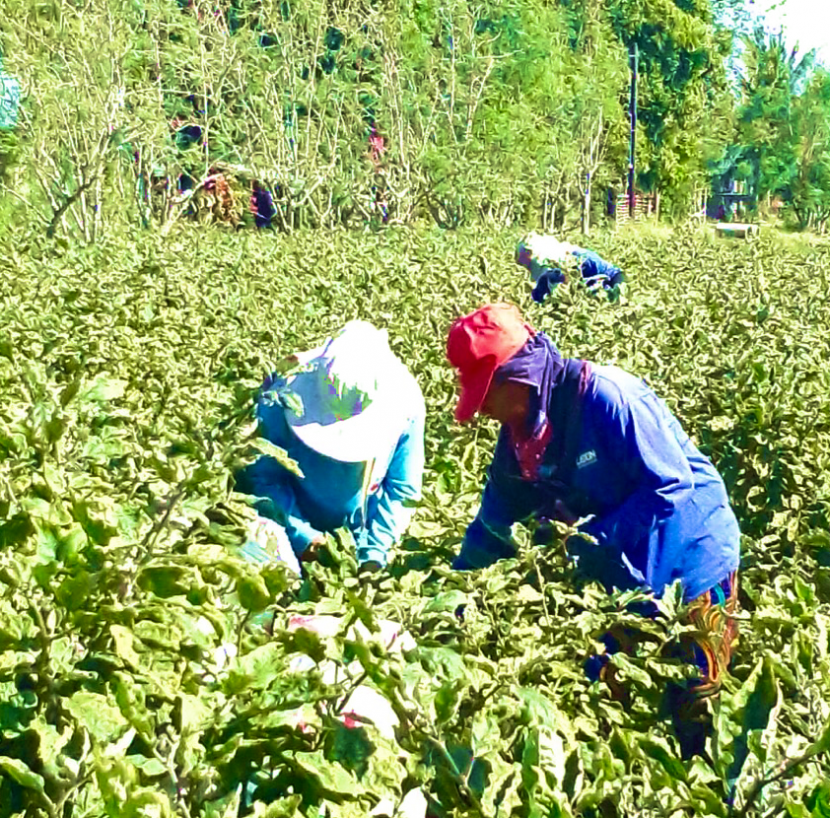

About SOAP
SOAP (Sustainable Organic Agricultural Project) Is A Web Application Development for Content and Information Management
The ‘SOAPers’ or members of the Sustainable Organic Agricultural Project Team of the Research Center for the Social Sciences and Education (RCSSED) of the University of Santo Tomas, has taken a proactive stance towards the issue of ensuring food security most especially during a state of public emergency created by COVID-19.